Pendahuluan
Dokumentasi ini akan menjelaskan tutorial Arduino Uno untuk mengirimkan data sederhana ke Antares menggunakan ethernet shield.
Prasyarat
Sebelum memulai, pastikan Anda telah memenuhi syarat sebagai berikut:
- Arduino IDE Silahkan install Arduino IDE pada komputer Anda. Klik Instalasi Arduino IDE untuk petunjuk instalasi
- Library Antares Ethernet Shield Arduino IDE Silahkan download library Antares ethernet shield pada Arduino IDE dengan klik Download Library Antares Ethernet Shield
- Buat Applikasi dan Device pada console Antares akun Anda
Instalasi Arduino IDE
Berikut langkah - langkah instalasi Arduino IDE
- Buka arduino.cc. Klik Software untuk mendapatkan installer.
- Pilih installer sesuai dengan Operating System yang Anda gunakan.
- Pilih "JUST DOWNLOAD" untuk memulai proses Download.
- Simpan installer pada laptop/personal computer.
- Pilih "I Agree" untuk memroses instalasi.
- Pilih "Next" untuk memroses instalasi.
- Pilih "Install" untuk memroses instalasi.
- Tunggu hingga proses instalasi selesai.
- Pilih "Install" untuk memroses instalasi.
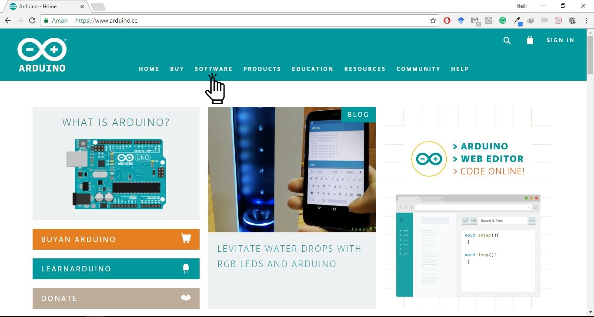
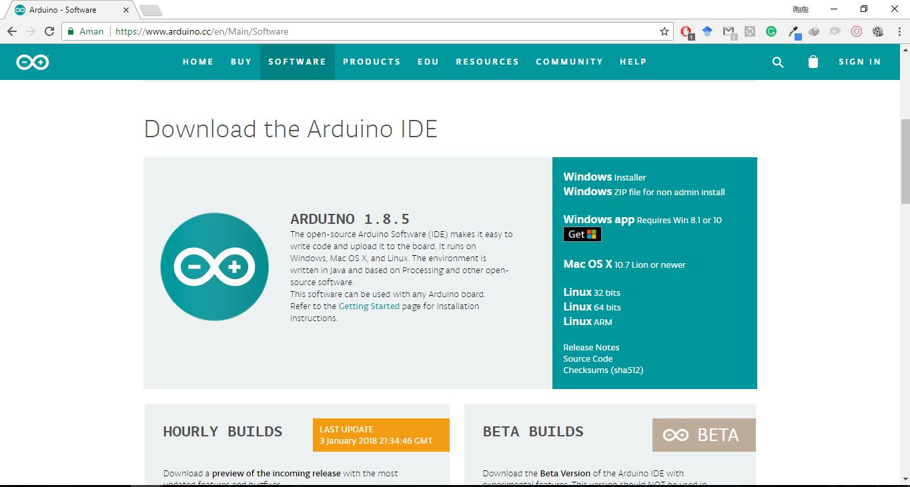
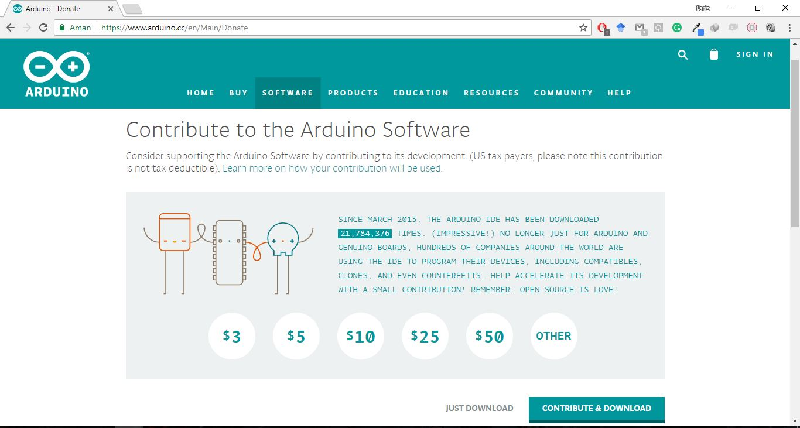
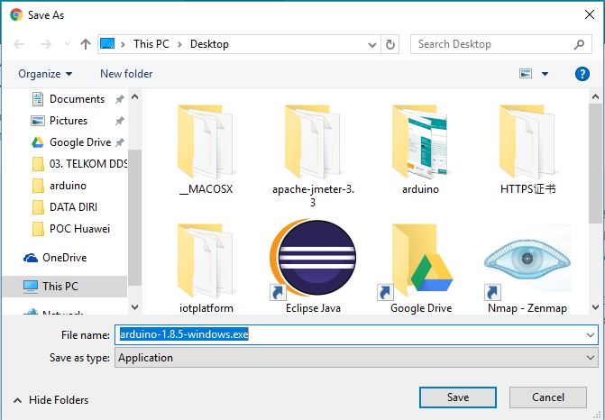
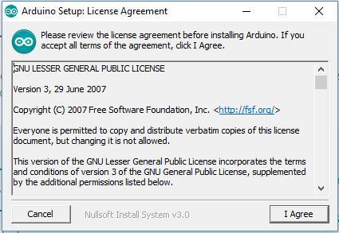
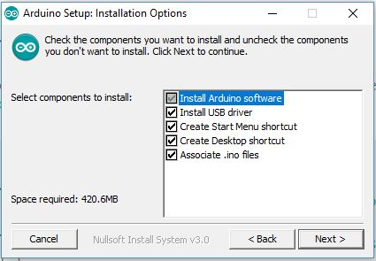
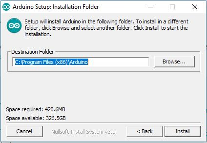
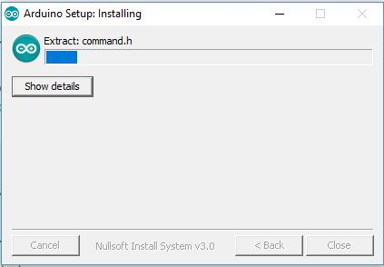
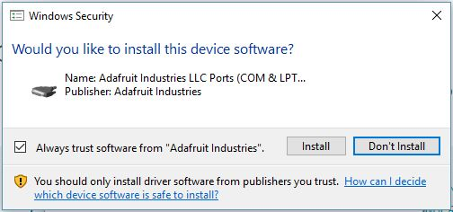
Selamat, proses instalasi telah selesai!!
Instalasi Library Antares Ethernet Shield
- Sebelum memulai proses pada software, Anda perlu menginstall Library Antares Ethernet Shield pada Arduino IDE yang Anda gunakan. Pada Arduino IDE, buka add .ZIP Library dengan klik Sketch > Include Library > add .ZIP Library.
- Kemudian pilih file zip Library Antares Ethernet Shield pada direktori penyimpanan yang telah Anda download sebelumnya. Lalu klik Open.
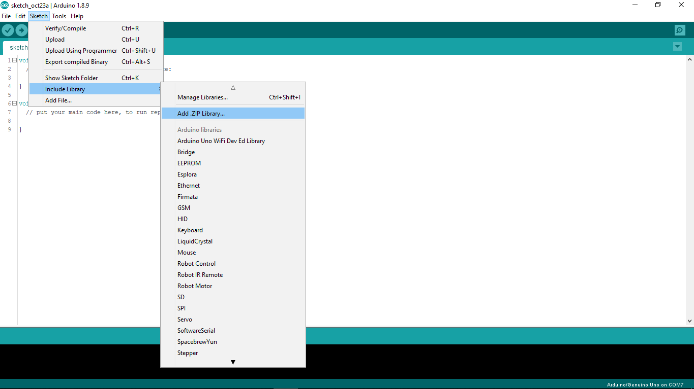
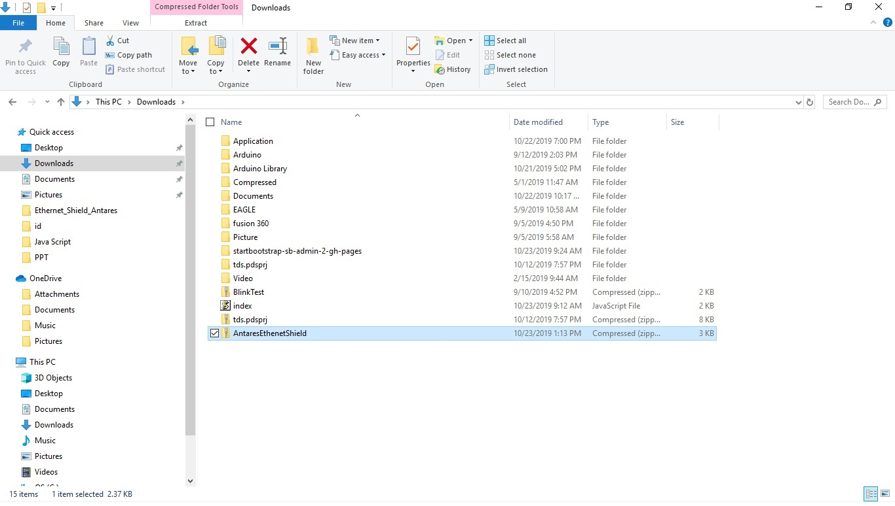
Konfigurasi
Ikuti langkah - langkah berikut untuk memulai proses konfigurasi :
- Masuk pada laman console Antares akun Anda
- Salin nama application dan device yang Anda gunakan di Antares ke example source code send data library Arduino Uno Ethernet Shield
- Pada Arduino IDE, konfigurasikan Arduino Uno sebagai board yang akan Anda gunakan. Klik Tools > Board > Arduino Uno.
- Pada Arduino IDE, konfigurasikan Port sesuai dengan Board Arduino yang Anda gunakan. Klik Tools > Port > COM ....
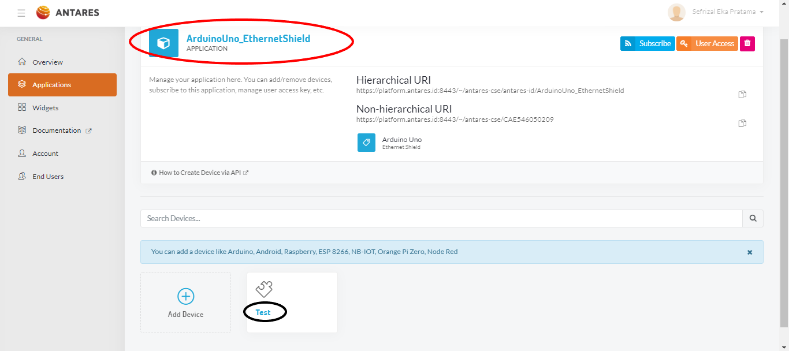
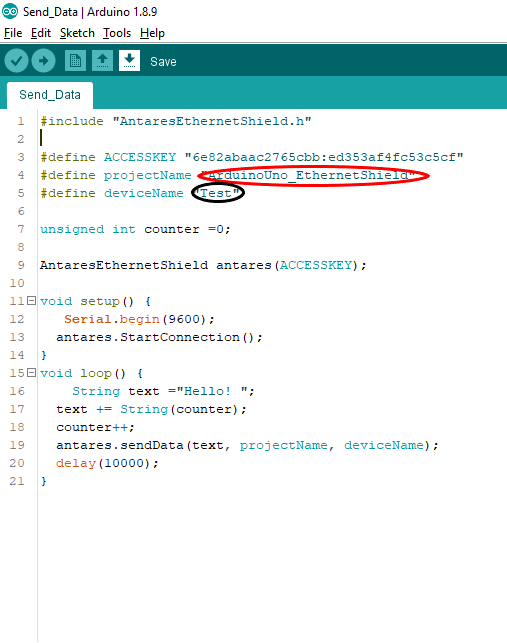
Kirim Data Sederhana ke Antares
Berikut merupakan source code untuk menghubungkan Arduino Uno Ethernet Shield dengan Antares menggunakan Arduino IDE.
Setelah Anda selesai melakukan konfigurasi, saatnya membuat kode program untuk mengirim data sederhana ke device pada console Antares yang telah Anda buat sebelumnya. Kode Program dapat Anda dapatkan di direktori example pada folder library Antares Ethernet Shield yang telah Anda download sebelumnya atau dengan mudah Anda dapatkan dengan klik File > Examples > AntaresEthernetShield > Send_Data pada Arduino IDE.
Kode program AntaresEthernetShield seperti berikut. Jangan lupa untuk ketik Access Key applicationname dan Device Id yang Anda gunakan pada console Antares akun Anda. Setelah itu upload program dan tunggu beberapa detik.
#include "AntaresEthernetShield.h"
#define ACCESSKEY "6e82abaac2765cbb:ed353af4fc53c5cf"
#define applicationName "ArduinoUno_EthernetShield"
#define deviceName "Test"
unsigned int counter =0;
AntaresEthernetShield antares(ACCESSKEY);
void setup() {
Serial.begin(9600);
antares.StartConnection();
}
void loop() {
String text ="Hello! ";
text += String(counter);
counter++;
antares.sendData(text, applicationName, deviceName);
delay(10000);
}
Setelah proses upload kode program selesai, silahkan periksa data yang masuk pada Device Antares yang telah Anda buat sebelumnya. Jika berhasil maka tampilan pada Device Anda akan seperti berikut ini:
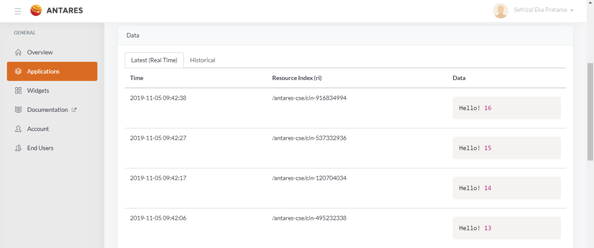